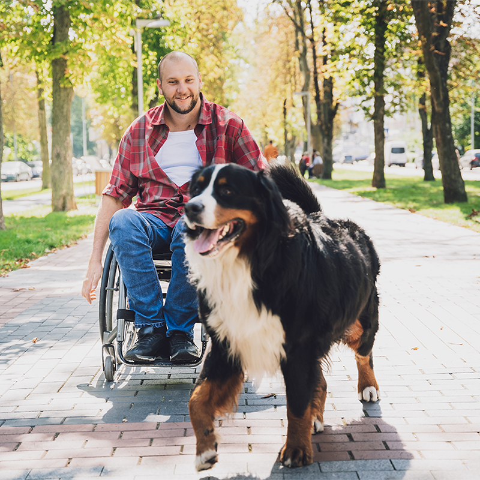

Our Community Services & Programs
Discover how Twin Cities Animal Rescue supports pets and prospective owners across the community.
Save Programs of Interest
Select programs below to bookmark them to your saved favorites list:
My Saved Favorites:
Adoption Process Overview
Our goal is to make matches that last a lifetime. We review applications carefully, host meet-and-greets, and provide post-adoption support.

Foster Program Overview
Foster caregivers provide temporary loving homes for animals recovering from surgery, young litters, or pets awaiting adoptive families. We supply food, crates, and medical care.
Volunteer Role Descriptions
Volunteers keep our mission moving forward! Roles include dog walking, cat socializing, event coordination, administrative support, and community outreach.